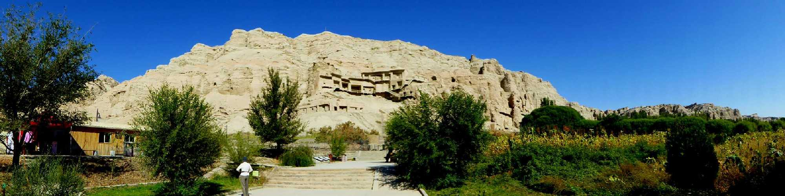
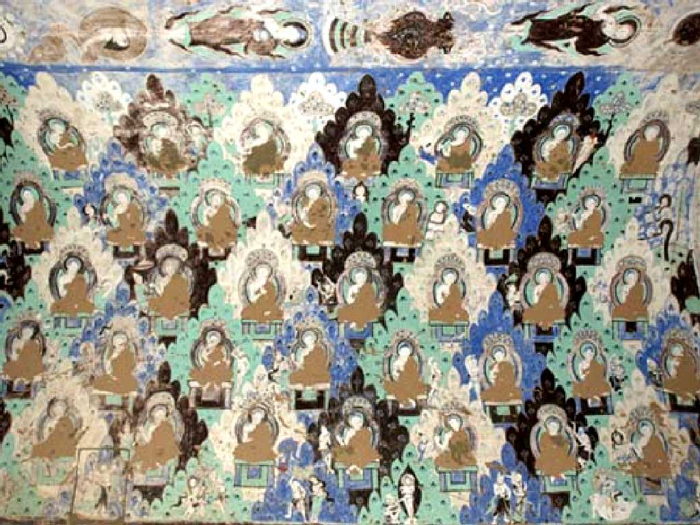
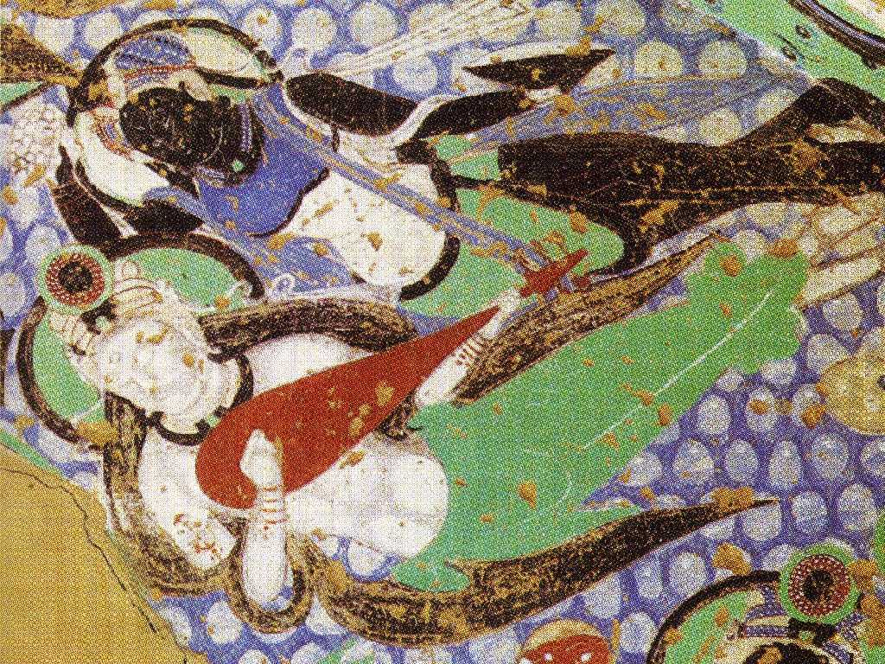
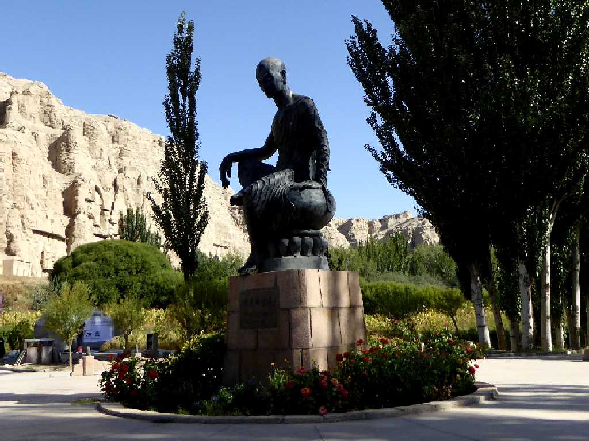
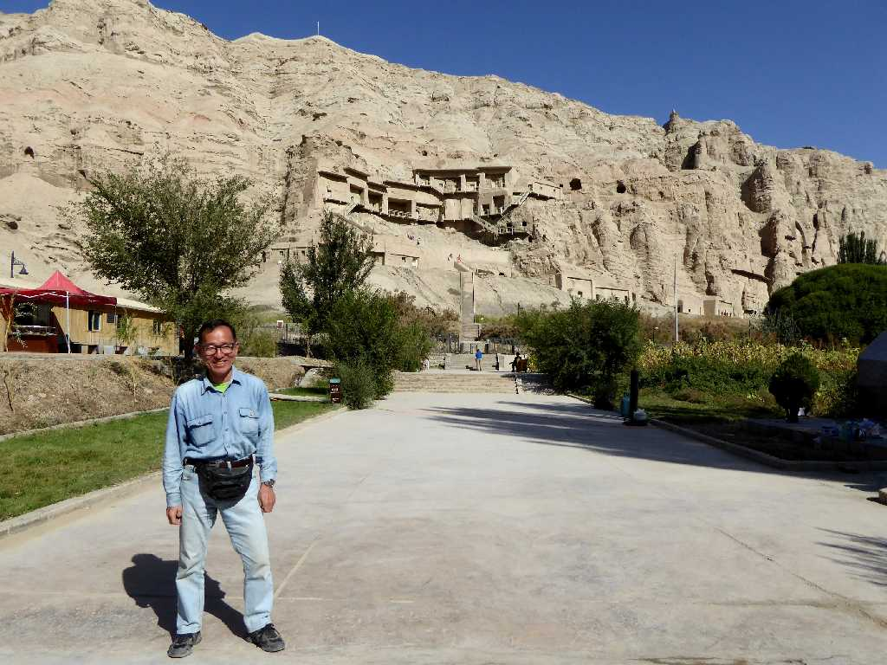

Kizil Caves Kuqa Xinjiang 新疆 库车 克孜尔千佛洞
新彊ウィグル自治区最大の石窟 ３世紀から８世紀にかけて古代仏教王国の亀茲国により彫られた

Kizil Caves 克孜尔千佛洞
キジル千仏洞は別名青い石窟と云われアフガニスタン産出のラピスラズリを多く用いた壁画が美しい

Kizil Caves 克孜尔千佛洞

Kumarajiva Kizil Caves 克孜尔千佛洞 鸠摩罗什
４世紀前半から５世紀前半に中国語の仏典翻訳で活躍していた亀茲出身の鳩摩羅什

September 23 2015 Kizil Caves 克孜尔千佛洞